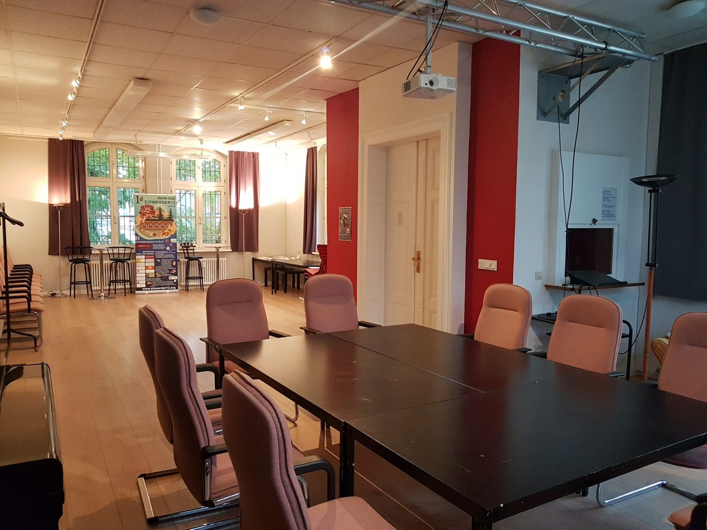
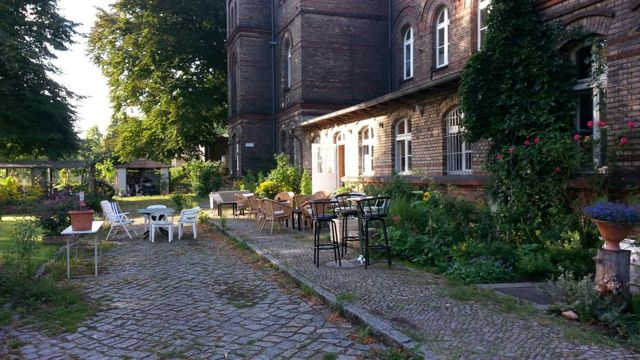
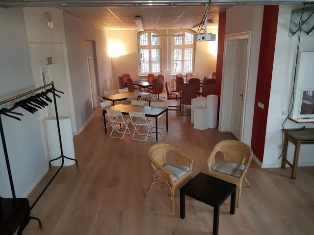
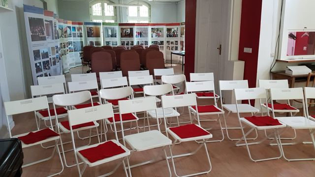
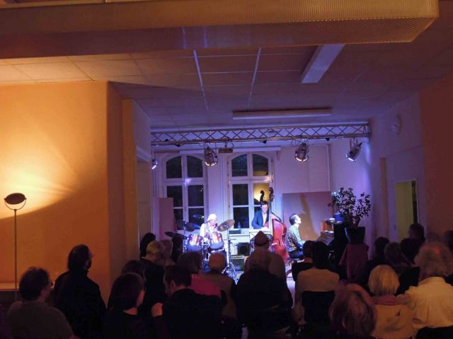
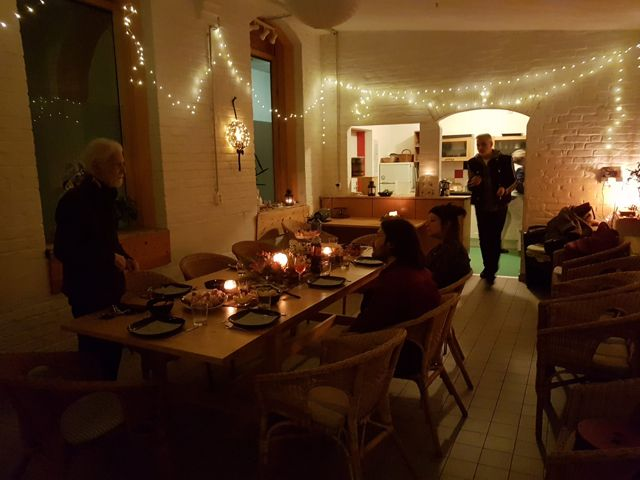

01
Im Salon ankommen.
Für eine Tagung, eine Feier oder Ihre Ausstellung: Der ca. 80 m² große Raum lässt sich für unterschiedliche Anlässe nutzen. Ein schwellenfreier Zugang ist möglich.

Der InselSalon
Ein Veranstaltungsraum mit Café, Terrasse und Garten an der Havel – für gemeinsame Arbeit, Kultur und die Feste Ihres Lebens.

Alles an einem Ort
Sie sagen uns, was Sie brauchen. Gemeinsam stimmen wir ab, welche Bereiche zu Ihrer Veranstaltung passen.
Was haben Sie vor?
Ein kleiner Rundgang
Für eine Tagung, eine Feier oder Ihre Ausstellung: Der ca. 80 m² große Raum lässt sich für unterschiedliche Anlässe nutzen. Ein schwellenfreier Zugang ist möglich.
Die Mini-Teeküche für Selbstversorger ist im Raum. Das Haus hat außerdem ein eigenes Café, das Sie zum Kochen oder für Ihr Catering nutzen können. Die Gemeinschaftsküche kann zusätzlich gebucht werden, zum Beispiel für ein Buffet.

Von der Gemeinschaftsküche geht es direkt auf die Terrasse. Eine Pause, ein Gespräch, ein Gang nach draußen: Ihr Tag kann zwischen Haus und Garten wechseln.

Der InselSalon verbindet sich direkt mit dem Garten. Der Blick geht weiter in den Park und zur Havel. Hier dürfen die Gedanken auch einmal spazieren gehen.

Die Havel gehört dazu: mit direktem Blick und Zugang zum Wasser. Sagen Sie uns, wie Sie Garten und Außenbereiche in Ihren Tag einbeziehen möchten.

Gut vorbereitet
Teilen Sie uns bei der Anfrage mit, was Sie nutzen möchten.
So einfach geht’s
Erzählen Sie uns von Anlass, Wunschtermin und Ihren Ideen.
Wir melden uns und stimmen die Möglichkeiten mit Ihnen ab.
Wenn alles passt, vereinbaren wir Ihre Buchung.
Ihr Tag auf Eiswerder
Sagen Sie uns, was Sie vorhaben – wir sagen Ihnen ehrlich, was geht.
030 / 68 07 75 29info@eiswerder13.org
Mit dem Formular bereiten Sie eine E-Mail vor. Sie senden sie anschließend in Ihrem E-Mail-Programm ab.
Lieber direkt schreiben? E-Mail an den InselSalon
Einblicke
Bilder aus dem Haus und von vergangenen Veranstaltungen. Zum Vergrößern auswählen.






Der Weg auf die Insel
denk-mal EISWERDER13 gGmbH
Eiswerderstraße 13–13a
13585 Berlin-Spandau
Vom S+U Rathaus Spandau mit dem Bus M36 oder 136 bis Eiswerderstraße. Von dort zu Fuß über die Große Eiswerderbrücke; gleich hinter dem Park links.
Rechnen Sie mit etwa 5 Minuten Busfahrt und etwa 10 Minuten Fußweg (ca. 590 m). Bitte prüfen Sie Ihre Verbindung vor der Anreise.
{kind=link}
{kind=link}
{kind=link}
{kind=link}